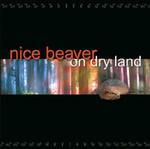

| Artist: | Nice Beaver |
| Title: | On Dry Land |
| Label: | first release self produced, rerelease on Cyclops CYCL |
| Length(s): | 52 minutes |
| Year(s) of release: | 2001 |
| Month of review: | [10/2001] |
| 1) | Culley On Bleeker Street | 7.12 |
| 2) | Oversight | 6.14 |
| 3) | Wintersong | 8.16 |
| 4) | Hope You Don't Mind | 9.01 |
| 5) | Like This | 6.14 |
| 6) | Where The River Runs | 7.53 |
| 7) | We Are The Sun | 6.57 |
Oversight opens in driven fashion with shouted vocals. The music then takes a turn for the mellow for some harmonies, but only for a little while, because then the loud opening part returns. Plenty of variation in this track, where the vocal harmonies are some Gentle Giantish, the complex parts are played fluently and the guitar plays a prominent melodic and energetic role.
Wintersong opens wonderfully, with a promise of dire days. The drummer punctuates, the vocalist is depressed, the tenseness continues to build (by rhythm guitar). The quality of the tracks goes up, this is goosebumps stuff. It is striking that this song lasts for over 8 minutes with so little variation. In fact, this is one of the main features. A slowly building majestic track with an imposing vocalist.
Hope You Don't Mind is the longest track here, opening slowly and moodily with ethereal guitar (think Marillion's Seasons End here). In fact, the music also reminds me a bit of One Fine Day, a later more blues oriented Marillion track. After four or so minutes the music breaks into something else entirely. Was this mastered right? Driven organ and rocking guitars and harmonies feature on this second part, where the vocal melodies are almost like hard rock.
Like This opens with shards of electric guitar and pounding drums turning into something rather complex and full of breaks. The vocals are much like the Police with a reggae groove. With the very catchy chorus this makes three totally different moods in the music. I like the chorus, but the reggae part doesn't appeal much to me. The second part of the track has the obligatory guitar solo and it does not do much for me. Plenty of drive again in this track, but as a song I like it certainly less than the previous ones.
Where The River Runs opens with a guitar line that might remind some of eighties King Crimson. On the whole a rather moody track with slow moody basswork, but one that comes along and passes you by. It does not stick although I do like the atmosphere of the track. The ending is a bit more active again with pounding drums and guitar.
The closer of the album is We Are The Sun. After a good instrumental beginning, the vocal part does not manage to appeal to me. Too little melody. The band turns to rock for the bridge part. The lyrics of the track are similar in subject to One For The Vine. Alternation between very active and passive passages make this again a varied piece of rock music. The band works itself up to a frenzied climax. But why the Arabic music at the end?